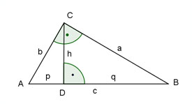
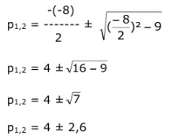

Flächenberechnungen Aufgabe 47 n rechtwinkliges Dreieck mit der Höhe h = 3 cm hat eine Fläche von A = 12 cm². Berechnen Sie die Seiten a, b und c des Dreiecks.  c * h A = ------- |*2 2 2 * A = c * h |:h 2 * A 2 * 12 cm² c = ------- = ------------- = 8 cm h 3 cm q = c - p = 8 - p Höhensatz für das Dreieck ABC: h² = p * q = p * (8 - p) h² = 8p - p² | +p² p² + h² = 8p | -8p p² - 8p + h² = 0 p² - 8p + 9 = 0 p,q - Formel: p = -8 ; q = 9  (p1 = 4 + 2,6 = 6,6 cm --> q1 = 8 cm - 6,6 cm = 1,4 cm) p2 = 4 - 2,6 = 1,4 cm --> q2 = 8 cm - 1,4 cm = 6,6 cm Pythagoras für das Dreieck ADC: a² = h² + q² a² = 3² + 6,6² = 9 + 43,6 = 52,6 a = √52,6 = 7,3 cm a * b A = ------- |*2 2 2 * A = a * b |:a 2 * A 2 * 12 cm² b = ------- = ------------- = 3,3 cm a 7,3 cm